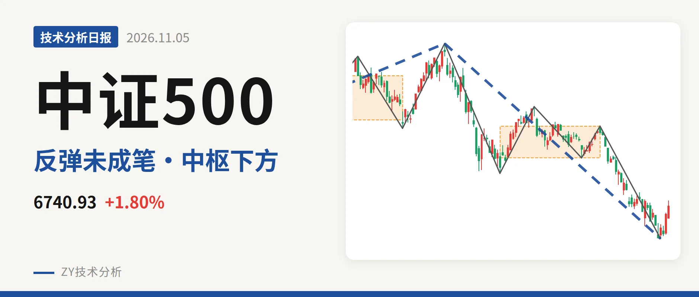
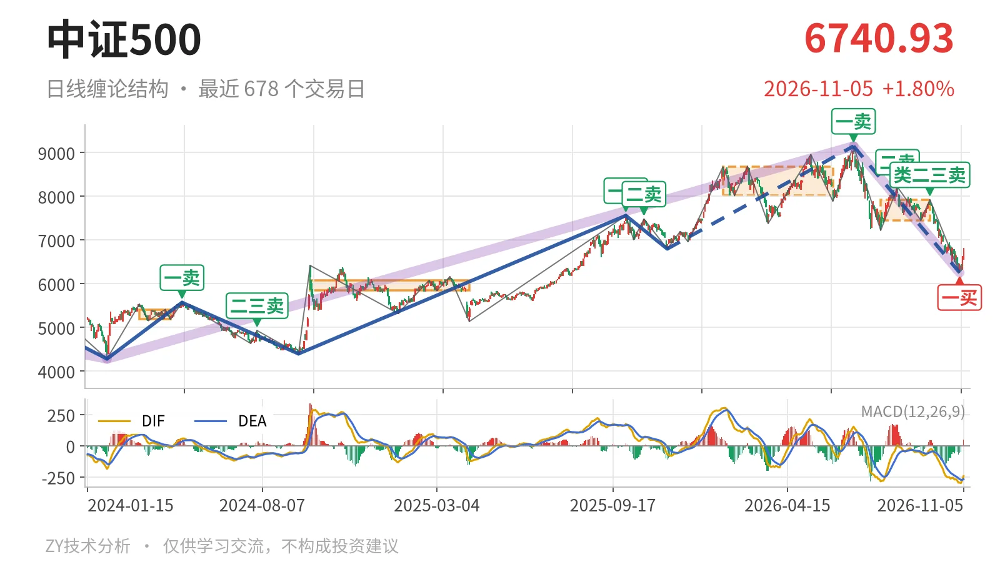
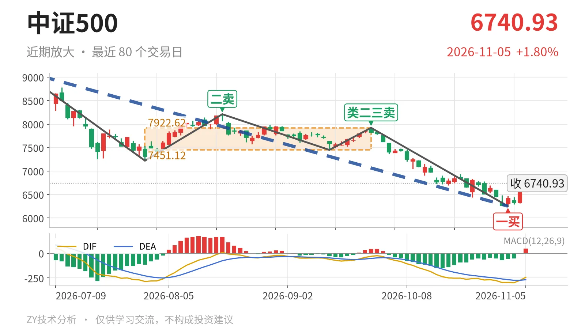

中证500｜收于中枢下方，反抽未过7451点

最近日线中枢 7451.12—7922.62点，收盘位于中枢之下
一句话：7月1日以来下跌段未结束，收盘6740.93点位于最近中枢下方。
📉 走势结构：7月以来下跌段仍在延续
更大级别上，2024年2月5日至2026年7月1日的上涨段从4281.24点拉到9147.56点，上涨约113.7%；7月1日之后转入下跌段，目前没有结束。日线线段同步给出相同结构，7月1日至11月2日的下跌段已经走出5笔，最近三根K线只是反抽，尚未构成新的日线笔，因此下跌段还在延续。2025年11月24日至2026年7月1日的上涨段末端已被7月后的下跌段破坏。

🧭 中枢与位置：收在最近中枢下方约9.5%
最近一个日线笔中枢在7月30日至9月22日，区间为7451.12—7922.62点，中轴7686.87点。最新收盘6740.93点，低于下沿7451.12点约710点，约9.5%。这个中枢比1月26日至6月8日的8014.66—8671.35点中枢明显下移，说明7月以后不是简单的震荡，而是形成了下移中枢。当前收在中枢下方，尚未回到震荡区间内部。
🔻 买卖点：7月后卖点一个比一个低，11月2日出现一买
日线笔级别买卖点中，7月1日一卖9147.56点、8月18日二卖8211.31点、9月22日类二三卖7922.62点，三个卖点一个比一个低。11月2日一买6253.79点出现，所在笔9月22日至11月2日已经结束；11月3日至5日最低6292.31点，没有再创新低。但这三根K线还没有形成反向日线笔，所以一买之后的转折力度还不明确。后续反抽若回不到7451点上方，结构上会更接近三卖；若重新站上7923点，则更可能是中枢扩展。

⚡ 背驰：面积收缩但DIF低点未抬高
9月22日至11月2日下跌笔创出7月以来新低，收在6253.79点。与7月1日至7月30日下跌笔比较，绿柱面积从2687缩小到1782，DIF低点却从-285.2进一步下探到-295.6。这不是标准的“新低不新弱”：面积虽然在收缩，DIF没有同步抬升，下跌动能只是部分衰减。因此11月2日一买缺乏清晰的底背弛配合，更像位置型反弹，而不是力度型反转。
🔎 关键位置观察：反抽看7451点，站回可转震荡
7451点附近是最近中枢下沿，也是当前反抽的第一道结构位。反抽若回不到7451点上方，则中枢下沿变为压力，结构仍有向下破坏一买的可能；若重新站上7923点附近，下跌段更可能转为中枢震荡。在未站回7451点之前，以中枢下方、下跌段延续对待；但11月2日低点6253点暂未被跌破，尚未进入加速下跌。综合看，当前结构偏弱，弱在价格位于中枢下方、下跌段未结束，关键就看反抽能否回到7451点附近。
⚠️ 本文为基于公开行情数据的缠论技术结构记录，由程序自动计算并生成，仅供学习交流，不构成任何投资建议。市场有风险，投资需谨慎。